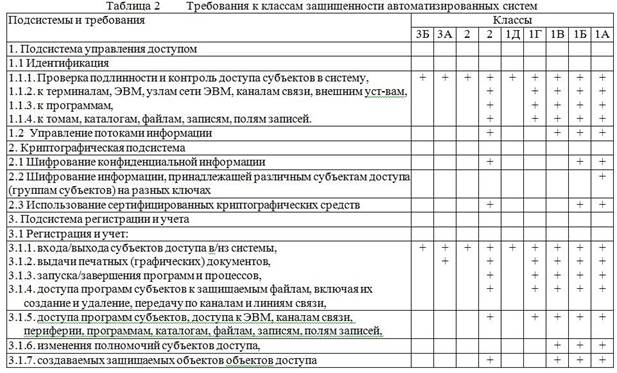
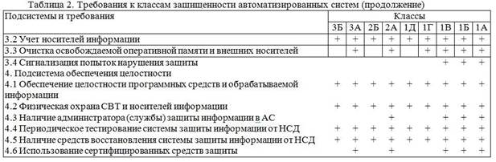

Под АС понимается ориентированная на конкретных пользователей система обработки данных.
Документы ГТК устанавливают девять классов защищенности АС от НСД, каждый из которых характеризуется определенной совокупностью требований к средствам защиты. Классы подразделяются на три группы, отличающиеся спецификой обработки информации в АС. Группа АС определяется на основании следующих признаков:
• наличие в АС информации различного уровня конфиденциальности,
• уровень полномочий пользователей АС на доступ к конфиденциальной информации:
• режим обработки данных в АС (коллективный или индивидуальный.
В пределах каждой группы соблюдается иерархия классов защищенности. Класс, соответствующий высшей степени защищенности для данной группы. обозначается индексом «NА», где N – номер группы (от 1 до 3).
Третья группа включает АС с одним пользователем, допущенным ко всей информации АС, размещенной на носителях одного уровня конфиденциальности. Группа содержит два класса – ЗБ и ЗА.
Вторая группа включат АС, в которых пользователи имеют одинаковые полномочия доступа ко всей информации, обрабатываемой и/или хранимой в АС на носителях различного уровня конфиденциальности. Группа содержит два класса – 2Б и 2А.
Первая группа включает многопользовательские АС. в которых одновременно обрабатывается или хранится информация разных уровней конфиденциальности. Не все пользователи имеют равные права доступа. Группа содержит пять классов – 1Д, 1Г, 1В, 1Б и 1А.
В общем случае, комплекс программно-технических средств и организационных (процедурных) решений по защите информации от НСД реализуется в рамках системы защиты информации от НСД (СЗИ НСД), условно состоящей из следующих четырех подсистем:
• управления доступом;
• криптографической;
• регистрации и учета;
• обеспечения целостности. В зависимости от класса АС в рамкахэтих подсистем должны быть реализованы требования в соответствии с таблицей 2. Подробно требования для каждого класса сформулированы в соответствующем документе ГТК.
В таблице 2 приведены требования к подсистемам защиты для каждого класса.

Данные требования являются составной частью критериев защищенности автоматизированных систем обработки информации от НСД. Требования сгруппированы вокруг реализующих их подсистем защиты. В отличие от стандартов других государств, отсутствует раздел, содержащий требования по обеспечению работоспособности системы, зато присутствует раздел, посвященный криптографическим средствам (стандарты других государств рассматривают их в качестве механизма, реализующего остальные требования, такие, как аутентификацию, контроль целостности и т. д.).

При разработке АС для обработки или хранения информации, являющейся собственностью государства и отнесенной к категории секретной, необходимо ориентироваться на классы защищенности АС не ниже (по группам) 3А, 2А, 1А, 1Б, 1В и использовать сертифицированные СВТ (в соответствии с РД «Средства вычислительной техники. Защита от несанкционированного доступа к информации. Показатели защищенности СВТ»):
• не ниже 4 класса для класса защищенности АС 1В;
• не ниже 3 класса для класса защищенности АС 1Б;• не ниже 2 класса для класса защищенности АС 1А.
Организационные мероприятия в рамках СЗИ НСД в АС, обрабатывающих или хранящих информацию, являющуюся собственностью государства и отнесенную к категории секретной, должны отвечать государственным требованиям по обеспечению режима секретности проводимых работ.
При обработке или хранении в АС информации, не отнесенной к категории секретной, в рамках СЗИ НСД государственным, коллективным, частным и совместным предприятиям, а также частным лицам рекомендуются следующие оргмероприятия:
• выявление конфиденциальной информации и ее документальноеоформление в виде перечня сведений, подлежащих защите;
• определение порядка установления уровня полномочий субъектадоступа, а также круга лиц, которым это право предоставлено;
• установление и оформление правил разграничения доступа, т. е.
совокупности правил, регламентирующих права доступа субъектов к объектам;
• ознакомление субъекта доступа с перечнем защищаемых сведений и его уровнем полномочий, а также с организационнораспорядительной и рабочей документацией, определяющей требования и порядок обработки конфиденциальной информации;
• получение от субъекта доступа расписки о неразглашении доверенной ему конфиденциальной информации;
• обеспечение охраны объекта, на котором расположена защищаемая АС, (территория, здания, помещения, хранилища информационных носителей) путем установления соответствующих постов, технических средств охраны или любыми другими способами, предотвращающими или существенно затрудняющими хищение средств вычислительной техники (СВТ), информационных носителей, а также НСД к СВТ и линиям связи;
• выбор класса защищенности АС в соответствии с особенностямиобработки информации (технология обработки, конкретные условия эксплуатации АС) и уровнем ее конфиденциальности;
• организация службы безопасности информации, осуществляющей учет, хранение и выдачу информационных носителей, паролей, ключей, ведение служебной информации СЗИ НСД (генерацию паролей, ключей, сопровождение правил разграничения доступа), приемку включаемых в АС новых программных средств, а также контроль за ходом технологического процесса обработки конфиденциальной информации и т. д.;
• разработка СЗИ НСД, включая соответствующую организационно-распорядительную и эксплуатационную документацию;
• осуществление приемки СЗИ НСД в составе АС.